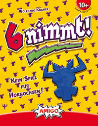

6 Nimmt!

6 Nimmt! (in the US, Take 5!) is a simple card game.
The game uses a deck of 104 cards. Each card has two properties: a unique face value between 1 and 104 (inclusive) and a "bull" number between 2 and 7 (inclusive). Playing the game requires a minimum of 2 players and is ideally played with 6, but in principle any reasonable number of players may participate.
The game is played in rounds, each round consists of turns.
At the beginning of each round, the dealer hands each player ten cards and creates four stacks with one card each, face up.
At the beginning of each turn, every player independently designates a card to be discarded. When all players have picked a card, the cards are placed on the stacks. The player whose card has the smallest face value goes first, followed by the player with the card with the second largest smallest face value, and so on.
If its face value is larger than any of the cards on top of one of the four stacks, it is placed on top of that stack whose top-most card is closest to the case in face value.
If this stack consists of five cards, the player loses accumulates the sum of the "bull" points on the cards of this stack. The stack is discarded and replaced by the new card.
If the card’s face value is smaller than all of the cards on top of the four stacks, the player must pick up one of the stacks and start a new one with the card. Again, the player loses the sum of the bull points on the cards of this stack.
If any player has lost 66 bull points or more at the end of the round, the game is over; the player with the smallest number of bull points is the winner. Otherwise, the players play another round.
Background Wikipedia